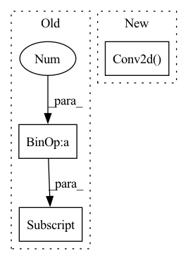

Pattern ID :33479
Before Change
self.reg_convs.append(head_layers[idx+2])
self.cls_preds.append(head_layers[idx+3])
self.reg_preds.append(head_layers[idx+4])
self.obj_preds.append(head_layers[idx+5] )
def initialize_biases(self):
for conv in self.cls_preds:After Change
self.stride = torch.tensor(stride)
self.use_dfl = use_dfl
self.reg_max = reg_max
self.proj_conv = nn.Conv2d( self.reg_max + 1, 1, 1, bias=False)
self.grid_cell_offset = 0.5
self.grid_cell_size = 5.0
// Init decouple headIn pattern: SUPERPATTERN
Frequency: 3
Non-data size: 3
Instances Fragment ID: 96423053
Project Name: meituan/yolov6
Commit Name: 49a80b1fdd025c9a326d0e4fea9825581dec00f4
Time: 2022-08-31
Author: lichuyi@meituan.com
File Name: yolov6/models/effidehead.py
M Class Name: Detect
N Class Name: Detect
M Method Name: __init__(8)
N Method Name: __init__(6)
M Parent Class: nn.Module
N Parent Class: nn.Module
M File Name: yolov6/models/effidehead.py
N File Name: yolov6/models/effidehead.py
M Start Line: 34
M End Line: 45
N Start Line: 15
N End Line: 38
Before Change
stride = 2,
padding=1,
output_padding=1),
nn.BatchNorm2d(hidden_dims[i + 1] ),
nn.LeakyReLU())
)
After Change
modules.append(
nn.Sequential(
nn.Conv2d( in_channels, embedding_dim,
kernel_size=1, stride=1) ,
nn.LeakyReLU())
)
Fragment ID: 96423052
Project Name: antixk/pytorch-vae
Commit Name: bb1f447818c4ad08c3fb2f9afd0de163534f81ea
Time: 2020-02-14
Author: anandkrish894@gmail.com
File Name: models/vq_vae.py
M Class Name: VQVAE
N Class Name: VQVAE
M Method Name: __init__(7)
N Method Name: __init__(7)
M Parent Class: BaseVAE
N Parent Class: BaseVAE
M File Name: models/vq_vae.py
N File Name: models/vq_vae.py
M Start Line: 143
M End Line: 214
N Start Line: 88
N End Line: 160
Before Change
self.reg_convs.append(head_layers[idx+2])
self.cls_preds.append(head_layers[idx+3])
self.reg_preds.append(head_layers[idx+4])
self.obj_preds.append(head_layers[idx+5] )
def initialize_biases(self):
for conv in self.cls_preds:After Change
self.stride = torch.tensor(stride)
self.use_dfl = use_dfl
self.reg_max = reg_max
self.proj_conv = nn.Conv2d( self.reg_max + 1, 1, 1, bias=False)
self.grid_cell_offset = 0.5
self.grid_cell_size = 5.0
// Init decouple head Fragment ID: 96423058
Project Name: augmentedstartups/as-one
Commit Name: 6f2f010dcaf35105030dcf5c371d3d2f97c25d90
Time: 2022-09-16
Author: ajmair.kashif@axcelerate.ai
File Name: asone/detectors/yolov6/yolov6/models/effidehead.py
M Class Name: Detect
N Class Name: Detect
M Method Name: __init__(8)
N Method Name: __init__(6)
M Parent Class: nn.Module
N Parent Class: nn.Module
M File Name: asone/detectors/yolov6/yolov6/models/effidehead.py
N File Name: asone/detectors/yolov6/yolov6/models/effidehead.py
M Start Line: 34
M End Line: 45
N Start Line: 15
N End Line: 38